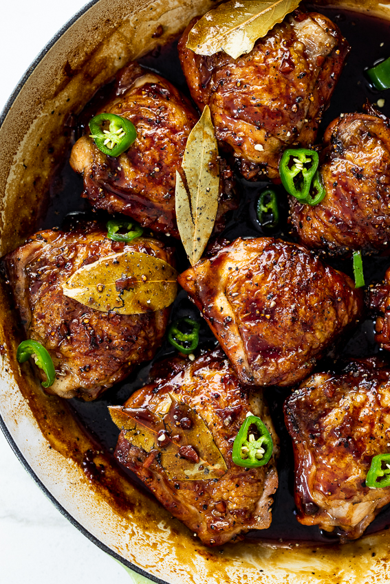

Chicken Adobo Recipe

Description
Chicken Adobo is a delicious recipe where chicken is braised in a marinade made of soy sauce, black pepper, bay leaves and vinegar. This easy version takes a few shortcuts but delivers the same punchy flavor and super tender braised chicken.
Ingredients
- Chicken thighs
- Vinegar
- Soy sauce
- Brown Sugar
- Garlic
- Black Peppers
- Bay Leaves
- Chillies
- Salt and Pepper
Steps
- Combine Chicken and Marinade ingredients in a bowl. Marinate for at least 20 minutes, or up to overnight.
- Heat 1 tbsp oil in a skillet over high heat. Remove chicken from marinade (reserve marinade) and place in the pan. Sear both sides until browned – about 1 minute on each side. Do not cook the chicken all the way through.
- Remove chicken skillet and set aside.
- Heat the remaining oil in skillet. Add garlic and onion, cook 1 1/2 minutes.
- Add the reserved marinade, water, sugar and black pepper. Bring it to a simmer then turn heat down to medium high. Simmer 5 minutes.
- Add chicken smooth side down. Simmer uncovered for 20 to 25 minutes (no need to stir), turning chicken at around 15 minutes, until the sauce reduces down to a thick jam-like syrup.
- If the sauce isn't thick enough, remove chicken onto a plate and let the sauce simmer by itself - it will thicken much quicker - then return chicken to the skillet to coat in the glaze.
- Coat chicken in glaze then serve over rice. Pictured in post as a healthy dinner plate (415 calories) with cauliflower rice and Ginger Smashed Cucumbers.